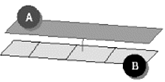
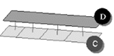
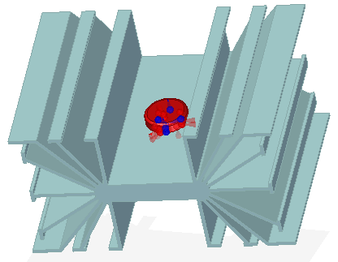
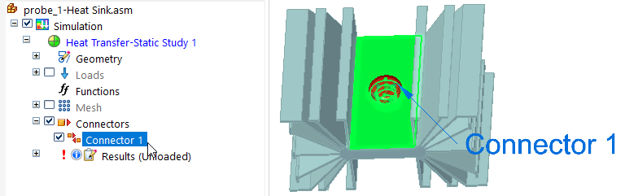

Target and source connector regions
When you create assembly connectors using the Manual connector command or the Auto connector command, you need to select target and source faces and surfaces to connect. In Solid Edge Simulation, the first selection is the target side of the connection. The second selection is the source side of the connection.
After connectors are created, you can use the options on the command bar to review the connected faces in each contact pair to determine which is the target face, swap target and source faces, and replace one face with another.
Choosing target and source connection regions
It is important to understand how contact elements are created when selecting the target and source sides of the connection, since the two can be interchangeable. The solver projects vector normals from the source region to the target region. It creates contact elements when these normals intersect elements in the target region and are within the search distance criteria for the contact pair. This means that when the two regions of a pair do not have corresponding one-to-one elements, the number of contact elements that the solver creates can change depending on which region it projects the element from and which region it projects them to.
Region (A) has one linear mesh element and region (B) has four. When contact elements are created between source region (A) and target region (B), a single contact element is created.

If (C) is selected as the source region and (D) is selected as the target region, then four contact elements are created.

In general, of the two regions you select in a contact pair, the mesh density on the source side of a connection should be greater than or equal to the mesh density on the target side of the connection. When the source and target regions have different mesh densities, more elements on the source region means that more contact elements are created, producing better results.
To learn how you can change the assigned regions in an existing connection, see Replace target and source connection regions.
Identifying connector target and source faces
In the Simulation pane, you can hover over a connector name to highlight the faces in the connected parts.

If you zoom in, you can see that the assembly connector symbols are color-coded to make it easier to identify the target faces and source faces for editing. You can use this information to identify and replace target and source connection regions in a thermal, glue, or no penetration contact connection.

The default colors are set on the Simulation page (Solid Edge Options dialog box), but you can change the colors locally on the Assembly Connector command bar.
|
Connection face |
Symbol on connected faces |
|
Connector target |
|
|
Connector source |
|


Click a connector name once to display its connector edit definition handle in the graphics window.

Click the edit definition handle once to display the command bar options for showing the source and target connected faces and for hiding unconnected parts.
Reviewing connected faces in each connection
When creating and editing connectors, you can use the Visibility Options list on the command bar to review the connected faces in each contact pair. For the currently selected connector pair, it highlights and shows the target face (red highlight), the source face (blue highlight), or both faces (green highlight).
- Show Both
-

- Show Target
-

- Show Source
-

You can use the Toggle Hide/Transparent control with the Visibility Options list to identify the target and source objects in a connection, and to cycle through the display of all unconnected parts in transparent mode or in hidden mode. If a model contains multiple parts, all of the parts that are not involved in the connection are shown in transparent mode, and then hidden.
When the Show Source visibility option is selected, and Toggle Hide/Transparent is on, the source part is shown in shaded mode, and the target part and all unconnected parts are displayed in transparent mode.

If you now turn Toggle Hide/Transparent off, all other parts are hidden.

Editing connector region direction
In a correctly defined assembly connector, the connector direction of the faces and surfaces in the target region, and the connector direction of the faces and surfaces in the source region, should point toward each other. In most cases, the connection commands achieve this goal. If they do not, you can use the Edit Region Directions command on the shortcut menu in the Simulation pane to:
-
View the faces and surfaces constituting the connector regions.
-
Change the direction of all connectors.
-
Change the direction of individual connectors on faces and surfaces.
For more information, see Change connector region direction.
How do I
Create connectors based on assembly relationshipsCreate assembly connectors using the Auto command
Create manual connections between faces or surfaces
Replace target and source connection regions
Change connector region direction
Learn more
Assembly connectorsAssembly connector handles, labels, and symbols
Glue and no penetration contact connectors
Thermal connectors
Look up more details
Auto command barAssembly Connector command bar
Assembly Connector Properties dialog box